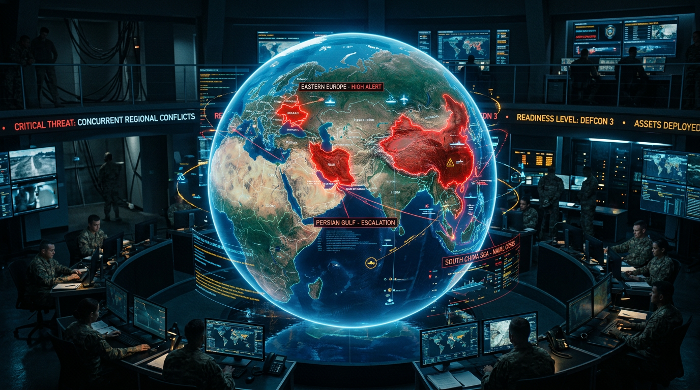
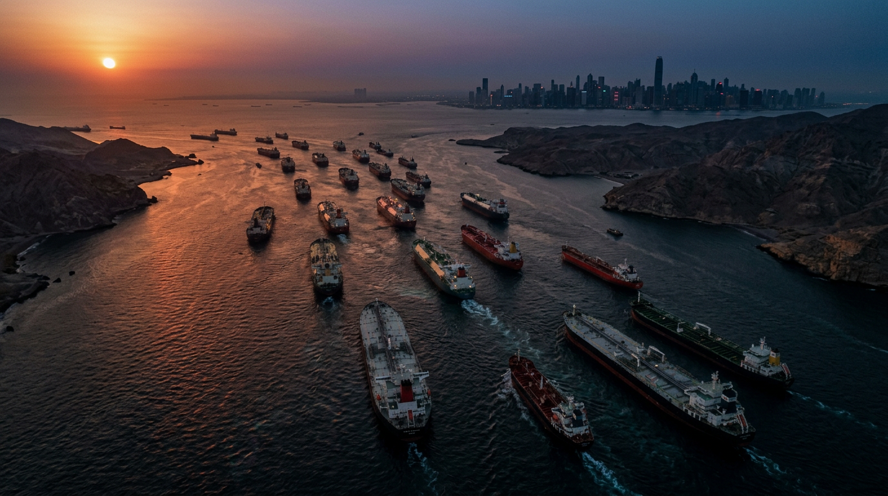
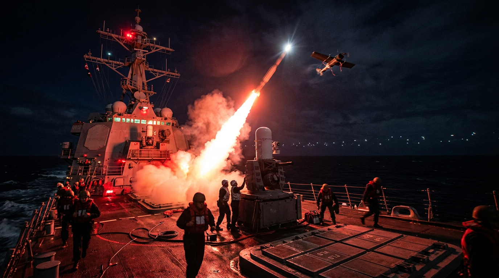
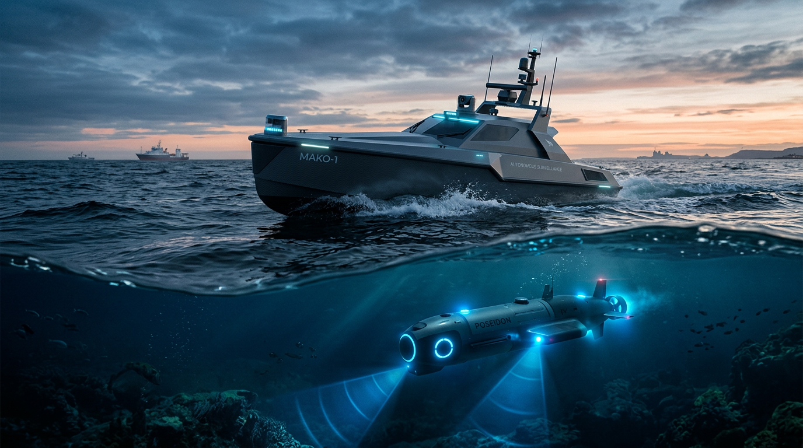

STRATEGIC EXECUTIVE BRIEF:
THE FOUR GATEWAYS CRISIS &
US-IRAN ESCALATION
1. THE "NORTH STAR" STRATEGY
Economy of Force via Asymmetric Deterrence.
To stabilize the global architecture, the United States must transition from a reactive, resource-intensive posture in the Middle East to an unmanned, allied-led containment framework.
By minimizing the deployment of high-value kinetic assets and manned naval platforms in the Middle East, the US can neutralize the Iranian threat while preserving the military bandwidth and interceptor inventories necessary to deter primary systemic adversaries (Russia and China) in the European and Indo-Pacific gateways.

2. HIGHEST-IMPACT INSIGHTS (BLUF)
-
Systemic "Bandwidth Exhaustion" is Underway: The US-Iran conflict is not an isolated regional dispute; it is functioning as a deliberate resource sink. Russia and China are actively synchronizing their military aggressions (in Ukraine and Taiwan) with US Middle East deployments to exploit depleted Western air defense and naval readiness.
-
The "Missing Component" Catastrophe: A full blockade of the Strait of Hormuz will trigger a structural supply chain collapse. Beyond causing $150–$200/bbl oil, the stranding of 25 Bcfd of LNG and Qatari helium will paralyze Asian semiconductor fabrication within 1.5 weeks, crashing the global high-tech economy.
-
The Cost-Exchange Trap: US conventional naval superiority is being neutralized by the "N+1" rule in the Strait. Deploying $2M interceptors against $20K Iranian suicide drones guarantees rapid magazine depletion, rendering US Carrier Strike Groups (CSGs) fatally vulnerable to land-based anti-ship cruise missiles (ASCMs).

3. CROSS-DOMAIN SYNERGIES (THE THREAT MATRIX)
Analyzing the intersections of the military, economic, and geopolitical domains reveals compounding vulnerabilities:
-
Geopolitics meets Economics: Russia leverages the Middle Eastern distraction for a dual benefit. Militarily, it exploits the absence of US PAC-3 systems to saturate Ukraine with glide bombs. Economically, the resultant spike in global oil prices directly funds Moscow's 1.5-million-man army and its war of attrition.
-
Economics meets the Indo-Pacific Security: Taiwan's strategic survival is currently threatened through a Middle Eastern backdoor. While China utilizes US naval distraction to execute "creeping escalation" (Phase 3 snap drills), a Hormuz blockade would instantly cut off Taiwan's critical LNG and helium supplies—achieving China's goal of neutralizing Taiwanese tech dominance without firing a shot in the Pacific.
-
Military Expansion meets Logistics: The expansion of Iranian and Houthi asymmetric warfare into the deep-water Indian Ocean and Red Sea forces the rerouting of 30% of global container traffic around the Cape of Good Hope. This 10–14 day delay triggers "missing component" syndrome, halting global automotive and electronics assembly lines.
.jpg)
4. TENSIONS AND STRATEGIC CONTRADICTIONS
Current US policies exhibit critical internal contradictions that must be reconciled:
-
Manned Escorts vs. Stand-off Survivability:
The Conflict: The Economic Strategy demands expanding multinational naval coalitions (heavy manned footprint) to escort vessels, lower prohibitive insurance premiums, and prevent a de-facto blockade. Conversely, the Military Strategy warns against entering the coastal "kill zone," recommending a standoff posture to protect high-value destroyers from asymmetric swarm/mine threats. -
Interceptor Bandwidth vs. Multi-Theater Defense:
The Conflict: Mitigating the immediate tactical threats in the Middle East requires draining US interceptor stockpiles (PAC-3, SM-2/6). This directly contradicts the Geopolitical Strategy, which requires those exact stockpiles to establish a credible deterrent against Chinese action in Taiwan and to protect Ukrainian airspace from Russian barrages.

5. PRIORITIZED NEXT STEPS
To execute the "North Star" strategy and resolve cross-domain tensions, the C-suite must direct the immediate implementation of the following steps:
Shift away from close manned escorts within the Strait. Deploy an AI-driven network of Unmanned Surface/Underwater Vehicles (USVs/UUVs) to provide continuous ISR and track "dark targets."
Maintain CSGs in a standoff posture in the Gulf of Oman, providing long-range anti-air overwatch for commercial vessels while remaining outside the Iranian ASCM kill zone.
Implement dynamic, non-kinetic Rules of Engagement (ROE) and strictly enforce CUES hotlines to de-escalate gray-zone provocations.
Immediately coordinate with G7 partners to finance and expand strategic stockpiles of LNG and Qatari helium in Taiwan and Japan, extending their reserve buffers beyond the current 1.5-week threshold.
Accelerate the near-shoring of helium recycling technology and critical semiconductor sub-component manufacturing to the US and Europe to sever reliance on the Hormuz-Suez corridor.
Transition security burdens to regional allies by formalizing a Middle East integrated air defense architecture that does not rely exclusively on US interceptor inventory.
Coordinate phased, data-driven releases from the Strategic Petroleum Reserve (SPR) coupled with a guaranteed price-triggered restocking mechanism to stabilize global markets and incentivize domestic US production without draining reserves prematurely.
Scale Industrial Base: Establish a Joint Defense Procurement Command with G7 and AUKUS partners to rapidly mass-produce interceptors and long-range anti-ship missiles, addressing the critical vulnerability of "bandwidth exhaustion."
Pre-Triggered Sanctions: Implement an automatic, pre-codified multilateral sanctions regime against the PRC that activates in the event of a Taiwan blockade, signaling unwavering resolve despite Middle Eastern deployments.